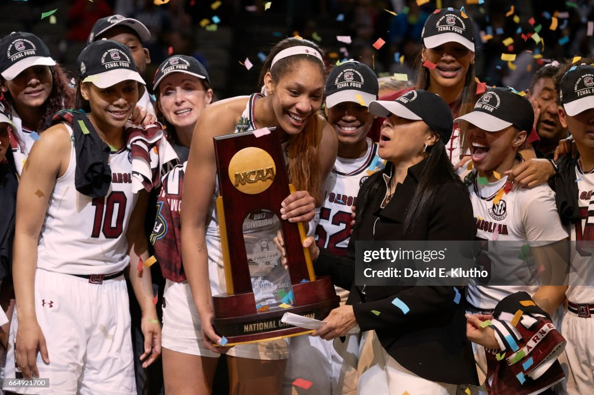
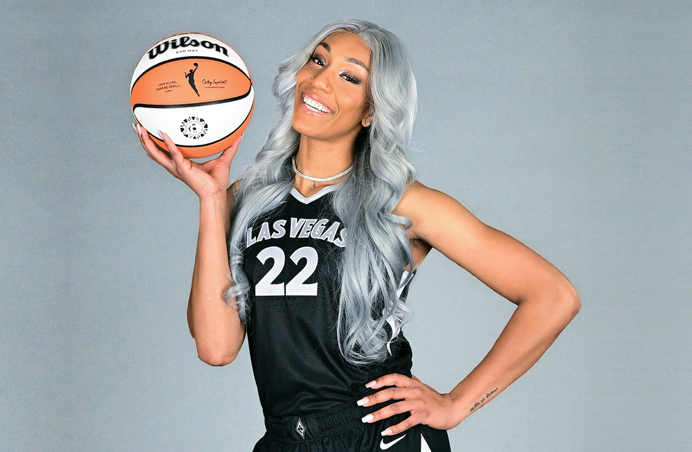

Aja Wilson was born on August 8, 1996, in Hopkins, South Carolina, where she discovered her assion for basketball at a young age. She attended Heathwood Hall Episcopal School in Columbia, where she became one of the most dominant high school players in the nation, earning McDonald's All-American honors. Wilson chose to stay close to home and play for the University of South Carolina Gamecocks under coach Dawn Staley. In 2017, she led the Gamecocks to their first-ever NCAA Championship and left college as one of the most decorated players in NCAA history, winning the Naismith College Player of the Year award twice.
Aja Wilson was selected as the first overall pick in the 2018 WNBA Draft by the Las Vegas Aces, immediately making an impact in the professional league. She won the WNBA Rookie of the Year award in her debut season and quickly established herself as one of the league's premier players. Wilson has led the Aces to back-to-back WNBA Championships in 2022 and 2023, earning Finals MVP honors in 2023. She is a multiple-time WNBA MVP, has been selected to numerous All-Star teams, and continues to dominate as one of the best centers in basketball while also winning Olympic gold medals with Team USA.
| College stats | WNBA stats | Post Season (WNBA) |
|---|---|---|
| 17.3 PTS | 21.4 PTS | 21.3 PTS |
| 8.7 REB | 9.3 REB | 9.9 REB |
| 1.4 AST | 2.3 AST | 2.4 AST |
| 2.6 BLK | 2.0 BLK | 2.2 BLK |